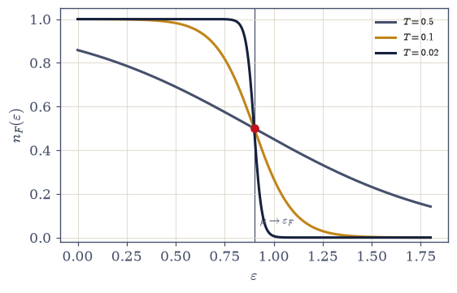
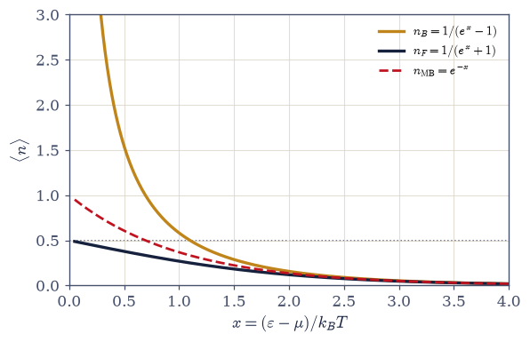
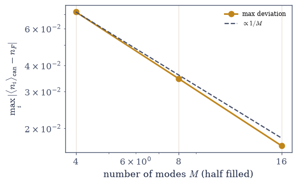
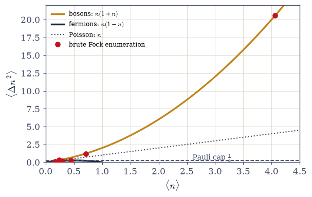

7.7 Bose–Einstein and Fermi–Dirac: The Grand Canonical Derivation#
Notebook overview#
Movement II opens with the volume’s central derivation. Movement I kept meeting two functions by accident: the Matsubara contours of §7.2 produced them from pure complex analysis, the warm qubit of §7.4 was the Fermi function, the warm oscillator of §7.5 was the Bose function. This notebook derives both on purpose, from the grand canonical ensemble of §5.9 quantized, and the derivation explains all three accidents at once.
The technical miracle to watch for is factorization. For identical particles (§6.20) the many-body basis is labelled by occupation numbers: how many particles sit in each single-particle mode, with \(n_i \in \{0, 1\}\) for fermions and \(n_i \in \{0, 1, 2, \dots\}\) for bosons. At fixed total \(N\) the constraint \(\sum_i n_i = N\) couples every mode to every other, and the canonical combinatorics is famously miserable. Release \(N\) — trade it for a chemical potential, exactly the move §5.9 built — and the grand partition function factorizes over modes, \(\Xi = \prod_i \Xi_i\), with each factor trivial: two terms for a fermion mode, a geometric series for a boson mode. We verify the factorization not by argument but against the entire Fock space, configuration by configuration, to ten digits. One line of algebra per species then yields the pair
and Movement I’s accidents become theorems: a fermionic mode is a two-level system (the qubit, with \(\mu\) the price of occupation), a bosonic mode is a harmonic oscillator (the ladder, with \(\mu = 0\) for photons previewed). The boson factor’s convergence condition — \(\mu < \varepsilon_ {\min}\), a ceiling on the chemical potential — is flagged loudly and left glowing: when the physics later pushes \(\mu\) against that ceiling, the ground mode’s occupation will blow up, and that mechanism is Bose–Einstein condensation (the BEC notebook; the bounded \(g_{3/2}\) of §7.3 is this ceiling’s integral shadow).
The rest of the notebook is verification with teeth. The rendezvous is held numerically: the ensemble \(n_B\) and \(n_F\) reproduce the Matsubara closed forms of §7.2 to seven digits and Movement I’s single-system results identically — three independent routes, one pair of functions, and the volume’s methodological moral made explicit. The Maxwell–Boltzmann limit is common to both statistics, with the telltale ordering \(n_B > \text{MB} > n_F\) visible already in the dilute corrections (where classicality is valid is the business of §7.8, deferred). Ensemble equivalence is re-enacted in quantum dress by exact fixed-\(N\) enumeration, its finite-size deviations shrinking on the \(1/M\) schedule §5.9 promised. And the fluctuations unify the movement: \(\langle\Delta n^2\rangle = \langle n\rangle(1 \pm \langle n\rangle)\) — bosons bunch (the geometric variance of §7.5, now general, and explosive near the ceiling), fermions antibunch, their variance capped at \(\tfrac14\): Pauli, audible in the noise.
Conventions (this notebook). Units \(k_B = 1\); fugacity \(z = e^{\beta\mu}\). The boson formulas require \(\mu < \varepsilon_{\min}\) and the code guards that domain rather than trusting the caller. Enumerations state their sizes: fermion Fock spaces via
itertools.product([0,1], ...), fixed-\(N\) canonical states viaitertools.combinations, boson occupation grids vianumpy.meshgridwith a stated \(n_{\max}\) governed by the geometric tail rule \(n_{\max} \gg 1/(1 - ze^{-\beta\varepsilon})\) — and where a truncation residual survives, it is printed, not hidden. Far-forward notebooks are cited by topic (the BEC notebook, the photon-gas notebook) pending the volume’s renumbering; near references (§7.8) by number.How to read the checks. Each exercise closes with a
validatecall against an independent fact: the factorized \(\Xi\) against the brute Fock-space sum to ten digits (both species); the Fermi step sharpening with \(n_F(\mu) = \tfrac12\) pinned; the Planck occupation recovered at \(\mu = 0\) by a genuinely different route (ladder sums, not the same formula); the Matsubara rendezvous at seven digits; the MB ordering with its \(\pm\)MB corrections; canonical-vs-grand deviations halving as the system doubles; and the variance formulas \(n(1\pm n)\) against brute enumeration, with the near-ceiling boson mode at variance \(\approx 20.6\) and the fermionic \(\tfrac14\) cap saturated at half filling. A ✓ is strong evidence; a ✗ is a prompt to locate the discrepancy.Scope. The two distributions and their fluctuations, derived and verified. The occupation labels suffice here — the operator machinery that creates and destroys quanta (second quantization) is the many-body volume’s opening and is named as a horizon. The degeneracy criterion and the \(N!\) derivation are §7.8; the Fermi step goes to work in the fermion movement; the ceiling saturates in the BEC notebook. See Pathria & Beale (Chs. 6–8); Huang (Chs. 8–9); Kardar, Statistical Physics of Particles (Ch. 7). Cross-reference §5.9 (the grand ensemble, put to work), §6.20 (the occupation restrictions), §7.2/§7.4/§7.5 (the rendezvous parties), §7.3 (the integrals awaiting these occupations).
Theory in brief#
Occupation numbers: the right coordinates for identical particles#
For identical particles the question “which particle is in which state?” is meaningless — §6.20 made that a postulate — and the surviving good question is “how many particles occupy each single-particle mode?” A many-body basis state is fully specified by the list of occupation numbers,
with the fermion restriction inherited directly from antisymmetry: a doubly-occupied antisymmetric state is its own negative, hence zero. One honest sentence of horizon: the operator machinery that creates and destroys quanta (second quantization) belongs to the many-body volume; for equilibrium statistics the occupation labels suffice, and they are all we use.
The grand canonical ensemble, quantized#
Recall §5.9 (invoked, not re-taught): when a system exchanges particles with a reservoir, the right ensemble weights each state by \(z^N e^{-\beta E}\) with fugacity \(z = e^{\beta\mu}\), and the normalization is \(\Xi = \sum_N z^N Z_N\). In occupation coordinates the double sum over \(N\) and states collapses into one unconstrained sum over all \(\{n_i\}\):
The middle step is the miracle, and it is worth naming what makes it possible. At fixed \(N\) the constraint \(\sum_i n_i = N\) couples every mode to every other — the sum does not factorize, and the canonical combinatorics of identical particles is notoriously unpleasant. Releasing \(N\) decouples the modes completely: each mode becomes its own small system in contact with the reservoir, and this is why the classical volume built §5.9. The promise is kept.
The Fermi–Dirac distribution#
A fermion mode has exactly two Fock states, \(n = 0\) and \(n = 1\):
Limits carry the physics: as \(T \to 0\), \(n_F\) sharpens into the step \(\theta(\mu - \varepsilon)\) — filled below the chemical potential, empty above, with \(n_F(\mu) = \tfrac12\) always — and \(\mu(T{=}0) = \varepsilon_F\) is the Fermi energy, the organizing scale of the fermion movement to come. The Movement-I accident is now a theorem: a fermion mode is the two-level system of §7.4, with the occupation costing \(\varepsilon - \mu\) rather than \(\varepsilon\) — the identification is exact, not analogical.
The Bose–Einstein distribution, and the glowing constraint#
A boson mode is a geometric series — and a geometric series has a convergence condition:
Flag the constraint loudly, because the volume will return to it: the chemical potential of bosons is capped below the lowest level. As \(\mu\) approaches \(\varepsilon_{\min}\) the ground mode’s occupation diverges — and when particle conservation later pushes \(\mu\) against that ceiling, the gas will have nowhere to put its particles but the ground mode. That mechanism is Bose–Einstein condensation (the BEC notebook; the bounded \(g_{3/2}\) of §7.3 is the ceiling’s integral shadow). The second Movement-I accident is also now a theorem: a boson mode is the harmonic oscillator of §7.5, its quanta the rungs — and photons, whose number nothing conserves, sit at \(\mu = 0\) (previewed for the photon-gas notebook).
The rendezvous: three routes, one pair of functions#
The volume now holds three independent derivations of the same pair:
and Exercise 5 makes them shake hands numerically. A contour integral that knew nothing of ensembles, two exactly solvable single systems that knew nothing of each other, and a reservoir argument had no obligation to agree; they agree because each is a window onto the same object — the thermal state of a mode. That is the volume’s methodological moral, made plain.
The Maxwell–Boltzmann limit, with its ordering#
For \(z \ll 1\) both distributions forget their statistics:
the classical Boltzmann occupation. But keep the next order and the species never quite forget: \(n_B > n_{\text{MB}} > n_F\) always — bosons over-occupy and fermions under-occupy the classical expectation even in the dilute limit, the first quantitative glimpse of bunching and exclusion. Where the classical description is valid — the degeneracy criterion \(n\lambda^3 \ll 1\) and the thermal wavelength behind it — is the next notebook’s entire business, deferred explicitly.
Ensemble equivalence, quantum edition#
The grand ensemble was a convenience, and physics at fixed \(N\) must agree in the large-system limit — the theme of §5.9, now re-enacted with Pauli in the game:
verified by exact enumeration: every fixed-\(N\) fermion configuration via
itertools.combinations, against the grand formulas with \(\mu\) matched by root finding. The
deviations shrink like \(1/M\) as the system doubles. Small systems care which ensemble describes
them; matter does not.
Fluctuations: bunching and antibunching#
One more derivative of \(\ln\Xi_i\) unifies the movement’s noise story:
The plus sign is bosonic bunching — the super-Poissonian geometric variance of §7.5, now general, and explosive near the fugacity ceiling. The minus sign is fermionic antibunching: the variance \(n(1-n)\) is capped at \(\tfrac14\), saturated at half filling — Pauli suppressing occupation noise, the quietest statistics the world allows. One formula, one sign, and the difference between laser physics and electron shot noise (horizons, named).
Setup#
Data and instruments only: the series colours, the notebook’s numerical conventions, the closed-form single-mode \(\Xi_i\) that Exercises 1 and 2 check against brute enumeration, and the \(\mu\)-matching root find Exercise 7 needs to put the two ensembles on the same footing. The objects this notebook is named for are not here: the two occupation formulas \(n_F\) and \(n_B\), and the Fock-space enumerator that verifies them, are built in Exercise 2, and the exact fixed-\(N\) canonical enumerator in Exercise 7.
The Setup below holds this notebook’s data and instruments — nothing you are asked to build. It is collapsed so the building stays yours; expand it whenever you want the details.
Exercise 1 — Occupation numbers, and the ensemble that sets them free#
The right coordinates for identical particles, and why fixed \(N\) was the obstacle all along. Cite Eq. 712, Eq. 713.
State the occupation-number description of the many-body basis for identical particles, with the Pauli restriction \(n_i \in \{0,1\}\) for fermions inherited from the antisymmetry of §6.20.
Write \(\Xi = \sum_N z^N Z_N\) (§5.9, invoked) as one unconstrained sum over \(\{n_i\}\) and derive the factorization \(\Xi = \prod_i \Xi_i\).
Explain (prose) what fixed \(N\) destroys: the constraint \(\sum n_i = N\) couples every mode — exhibit the obstruction on a two-mode fermion example by writing out \(Z_{N=1}\) explicitly and checking the definitional double sum against the factorized \(\Xi\) numerically.
State the payoff: each mode is now its own small system against a reservoir — the two distributions will each cost one line.
two-mode fermion check: Σ_N z^N Z_N = 2.320727449313
Π_i Ξ_i = 2.320727449313
Z_1 = e^(−βε_1) + e^(−βε_2) = 0.833829: a sum over WHICH mode holds the particle —
the constraint couples the modes; releasing N is what decouples them
Validation 1#
✓ the grand ensemble decouples the modes: Σ_N z^N Z_N = Π Ξ_i on the worked two-mode example [got 2.32073 vs expected 2.32073 (rtol=1e-12, atol=1e-09)]
True
Exercise 2 — Factorization, brutally verified#
The claim \(\Xi = \prod\Xi_i\) is checked against the entire Fock space, configuration by configuration — and a brute check needs both a brute sum and something to check it against. The two occupation formulas are already on the table as Eq. 714 and Eq. 715: they are transcribed here as comparators and earned in Exercises 3 and 4, in the order physics usually acquires a formula — written down first, derived afterwards. Cite Eq. 713.
Write
grand_enumerate(eps_list, beta, mu, statistics, n_max=1): sum the weight \(z^{\sum n}e^{-\beta\sum n\varepsilon}\) over every occupation configuration of a few modes and read off \(\Xi\), the per-mode \(\langle n_i\rangle\) and the per-mode \(\langle\Delta n_i^2\rangle\) with no closed form anywhere — fermions enumerating \(\{0,1\}^M\) withitertools.product([0,1], repeat=M), bosons anumpy.meshgridgrid of occupations \(0,\dots,n_{\max}\) per mode. Write this one yourself — the implementation is the lesson.Write the two comparators
n_FD(eps, beta, mu)andn_BE(eps, beta, mu), both vectorized over \(\varepsilon\). The fermion form needs no domain guard; the boson form exists only for \(\mu < \varepsilon\) and should raise there rather than return the negative occupation the bare arithmetic would produce, withnumpy.expm1in its denominator (the small-\(x\) discipline of §7.5, where the occupation is largest).For three fermion modes (\(\varepsilon = 0.3, 0.9, 1.6\); \(\beta = 1.1\); \(\mu = 0.1\)), enumerate all \(2^3\) occupation configurations and sum the weights.
Confirm the brute \(\Xi\) equals \(\prod(1 + ze^{-\beta\varepsilon_i})\) (the Setup’s
xi_modecomparator) to at least ten digits, and the brute \(\langle n_i\rangle\) equal your \(n_F\) formula to at least eight digits.Repeat for bosons on a truncated
numpy.meshgridoccupation grid (\(n_{\max} = 110\) for the gates; a deliberately short \(n_{\max} = 40\) run demonstrates the tail rule \(n_{\max} \gg 1/(1 - ze^{-\beta\varepsilon})\)), confirming the product of geometric series — and state the residual of the \(n_{\max} = 80\) run of record (\({\sim}10^{-6}\) on the softest mode’s occupation).Note (prose) which mode carries the residual and why: \(ze^{-\beta\varepsilon} = 0.80\) there — the geometric series is slow exactly where the physics is about to become interesting.
fermions: Ξ brute = 3.039933245271 Π Ξ_i = 3.039933245271
⟨n⟩ brute: [0.4452207649 0.2931777789 0.1611089496]
n_F formula: [0.4452207649 0.2931777789 0.1611089496]
bosons: Ξ brute = 10.709586539348 Π Ξ_i = 10.709586539614
⟨n⟩ brute: [4.0637731042 0.7087676009 0.2377002128]
n_B formula: [4.0637731069 0.7087676009 0.2377002128]
truncation on the softest mode: n_max = 40 → |Δ⟨n⟩| = 5.0e-03
n_max = 80 → |Δ⟨n⟩| = 1.5e-06 (stated, not hidden)
Validation 2#
✓ Ξ factorizes over modes: verified against the whole Fock space, both statistics [max|Δ| = 2.65649e-10 (rtol=1e-10, atol=1e-09)]
✓ the brute fermion occupations equal the n_F closed form [max|Δ| = 2.77556e-17 (rtol=1e-10, atol=1e-09)]
✓ the brute boson occupations equal the n_B closed form (n_max = 110) [max|Δ| = 2.75329e-09 (rtol=1e-08, atol=1e-09)]
✓ the geometric tail rule: n_max = 40 is visibly short on the r = 0.80 mode, 80 is not [residuals 5.0e-03 → 1.5e-06]
True
Exercise 3 — The Fermi–Dirac distribution#
Two Fock states, one line, and the step that organizes all of metal physics. Cite Eq. 714.
Derive \(n_F = 1/(e^{\beta(\varepsilon-\mu)}+1)\) from \(\Xi_i = 1 + ze^{-\beta\varepsilon_i}\) via \(\langle n\rangle = z\,\partial_z\ln\Xi_i\) — the derivation that earns the
n_FDyou wrote in Exercise 2.Verify the \(T \to 0\) step numerically with that
n_FD(\(T = 0.5, 0.1, 0.02\) at \(\mu = 0.9\)): filled below \(\mu\), empty above, \(n_F(\mu) = \tfrac12\) always.Identify \(\mu(T{=}0)\) as the Fermi energy \(\varepsilon_F\) (the highest filled level) and preview its role as the organizing scale of the fermion movement.
Close the Movement-I accident (prose plus a one-line check): the mode is the two-level system of §7.4 with the occupation cost \(\varepsilon - \mu\); the qubit’s upper population is \(n_F\) identically.
T = 0.50: n_F(μ−5T) = 0.9933 n_F(μ) = 0.5000 n_F(μ+5T) = 0.0067
T = 0.10: n_F(μ−5T) = 0.9933 n_F(μ) = 0.5000 n_F(μ+5T) = 0.0067
T = 0.02: n_F(μ−5T) = 0.9933 n_F(μ) = 0.5000 n_F(μ+5T) = 0.0067
the qubit population of §7.4 at Δ = ε − μ vs n_F: max|Δ| = 5.55e-17

Fig. 644 The Fermi–Dirac distribution sharpening into its zero-temperature step, at \(\mu = 0.9\): as \(T\) drops (\(0.5 \to 0.1 \to 0.02\)) the smeared transition region of width \(\sim k_BT\) collapses onto the discontinuity \(\theta(\mu-\varepsilon)\) — filled below the chemical potential, empty above, with \(n_F(\mu) = \tfrac12\) pinned at every temperature (dot). The \(T = 0\) chemical potential is the Fermi energy \(\varepsilon_F\), the top of the filled sea and the organizing scale of the fermion movement to come: for electrons in a metal \(\varepsilon_F/k_B \sim 5\times10^4\) K, so room temperature sits deep in the near-step regime and the sharp sea, not the classical gas, is the right zeroth picture of a wire.#
Validation 3#
✓ n_F(μ) = 1/2 at every temperature: the point the smearing never moves [max|Δ| = 0 (rtol=1e-12, atol=1e-09)]
✓ the T → 0 step: filled below μ, empty above, to better than 1% at 5 thermal widths [n(μ−5T) = 0.9933, n(μ+5T) = 0.0067]
✓ the Movement-I accident closed: the qubit of §7.4 at Δ = ε − μ IS the fermion mode [max deviation 5.6e-17]
True
Exercise 4 — The Bose–Einstein distribution, and the ceiling#
A geometric series with a convergence condition that will later condense a gas. Cite Eq. 715.
Derive \(n_B = 1/(e^{\beta(\varepsilon-\mu)}-1)\) from the geometric \(\Xi_i = 1/(1-ze^{-\beta\varepsilon_i})\), stating the convergence requirement \(\mu < \varepsilon_{\min}\) — the derivation that earns the
n_BEyou wrote in Exercise 2, and the reason its domain guard is physics rather than defensive programming.Demonstrate the approach to the ceiling numerically with that
n_BE: fix \(\varepsilon_{\min} = 0.5\) and raise \(\mu\) toward it, tabulating the ground mode’s \(\langle n\rangle\) and the enumeration \(n_{\max}\) the tail rule demands — occupation and cost both diverging.Close the second Movement-I accident: the mode is the oscillator of §7.5; at \(\mu = 0\) the formula is the Planck occupation, checked by a genuinely different route (a truncated Boltzmann ladder sum, not the same closed form).
Flag the physics to come (prose): a gas whose \(\mu\) is pushed against \(\varepsilon_{\min}\) by particle conservation has nowhere to put its particles but the ground mode — the mechanism, named now, demonstrated in the BEC notebook.
the ceiling, approached: μ → ε_min = 0.5
μ ⟨n_ground⟩ tail rule 1/(1 − z e^(−βε))
0.10 2.033 3.0
0.30 4.517 5.5
0.45 19.504 20.5
0.49 99.501 100.5
μ = 0.6 > ε_min: n_BE raises ValueError — the domain guard holds: True
Planck by ladder sum: 0.685117750405 n_B(μ = 0): 0.685117750405
Validation 4#
✓ the Bose–Einstein distribution at μ = 0 is the Planck occupation (ladder-sum route) [got 0.685118 vs expected 0.685118 (rtol=1e-12, atol=1e-09)]
✓ the ceiling approached: the ground occupation diverges as μ → ε_min [⟨n⟩ = 2.03 → 99.5]
✓ the domain guard: n_BE refuses μ ≥ ε_min rather than returning unphysical occupations
True
Exercise 5 — The rendezvous: three routes, one pair of functions#
Contours, small systems, and ensembles are made to shake hands, numerically. Cite Eq. 716.
Recompute the Matsubara sums of §7.2 \((1/\beta)\sum_n 1/(\omega_n^2+\varepsilon^2)\) for both frequency families (symmetric truncation \(n_{\max} = 3\times10^5\) with the stated \(1/n_{\max}\) tail estimate) at \(\varepsilon = 1.3\), \(\beta = 2\).
Confirm they equal \((1/2\varepsilon)(1+2n_B)\) and \((1/2\varepsilon)(1-2n_F)\) with the ensemble \(n\)’s of this notebook — the
n_BEandn_FDyou wrote in Exercise 2 — to at least six digits.Confirm the qubit population of §7.4 and the Planck occupation of §7.5 equal \(n_F\) and \(n_B\) identically at matched parameters.
Reflect (prose): three derivations with no shared machinery agreed because each computes the same object — the volume’s methodological moral.
bosonic: Matsubara = 0.4463328860 ensemble (1+2n_B)/2ε = 0.4463328860
fermionic: Matsubara = 0.3314319844 ensemble (1−2n_F)/2ε = 0.3314319844
qubit vs n_F: |Δ| = 2.78e-17 ladder vs n_B: |Δ| = 5.55e-17
Validation 5#
✓ the three-route rendezvous: the contours of §7.2 meet this notebook's ensemble distributions [max|Δ| = 5.62994e-13 (rtol=1e-06, atol=1e-09)]
✓ and Movement I's single systems are the same functions identically (qubit → n_F, ladder → n_B) [|Δ| = 2.8e-17, 5.6e-17]
True
Exercise 6 — The Maxwell–Boltzmann limit, and its ordering#
Both statistics forget themselves at small fugacity — but not symmetrically. Cite Eq. 717.
Show both \(n_B\) and \(n_F\) reduce to \(ze^{-\beta\varepsilon}\) as \(z \to 0\), and verify at \(z = 0.01\) with your Exercise 2
n_BEandn_FD(relative deviations \(\sim n_{\text{MB}}\), of order \(z\)).Keep the next order — \(n_B = n_{\text{MB}}(1+n_{\text{MB}})\), \(n_F = n_{\text{MB}} (1-n_{\text{MB}})\) — and confirm the ordering \(n_B > n_{\text{MB}} > n_F\) numerically across a range of \(\varepsilon\).
Interpret (prose): over- and under-occupation relative to classical are bunching and exclusion showing through even in the dilute limit.
Defer explicitly: where the classical description is valid — the criterion \(n\lambda^3 \ll 1\) and the thermal wavelength — is the next notebook’s (§7.8) entire business.
z = 0.01: relative deviations from MB at ε = 0.2:
bosons +0.00825 fermions −0.00812 (both ≈ n_MB = 0.00819)
n_B > MB > n_F at all 12 energies: True

Fig. 645 The emblem of quantum statistics: the three occupations against the collapse variable \(x = (\varepsilon-\mu)/k_BT\). Bose–Einstein \(1/(e^x-1)\) (amber) diverges as \(x \to 0^+\), the fugacity ceiling’s edge where the geometric series barely converges; Fermi–Dirac \(1/(e^x+1)\) (dark) is bounded by 1 and crosses \(\tfrac12\) at \(x = 0\); Maxwell–Boltzmann \(e^{-x}\) (red, dashed) splits them everywhere: \(n_B > n_{\mathrm{MB}} > n_F\) at every \(x\), the over- and under-occupation that are bunching and exclusion in embryo. At \(x \gtrsim 3\) the three curves are indistinguishable — the dilute regime where statistics sleeps — and the single variable \(x\) superposes every temperature and chemical potential onto one pair of axes: one figure, and the difference between light, metals, and classical gases.#
Validation 6#
✓ the common classical limit and its telltale ordering: n_B > MB > n_F at every energy
✓ the dilute corrections are ±n_MB to next order: bunching and exclusion in embryo [max|Δ| = 6.64876e-05 (rtol=0.02, atol=1e-09)]
True
Exercise 7 — Ensemble equivalence, by exact enumeration#
The grand ensemble was a convenience; fixed-\(N\) physics must agree — and we can watch it start to. The canonical side admits no formula here, only enumeration: at fixed \(N\) every \(N\)-subset of the \(M\) modes is one antisymmetric basis state of energy \(\sum_{i \in S}\varepsilon_i\), so \(\langle n_i\rangle\) is the Boltzmann-weighted fraction of subsets containing mode \(i\). The cost is combinatorial, and \(C(16,8) = 12870\) is where the restraint comes from: the point is the trend, not heroic system sizes. Cite Eq. 718.
Write
canonical_occupations(eps_list, N, beta), the exact fixed-\(N\) fermion occupations by enumeratingitertools.combinations— no approximation anywhere, every configuration weighted and counted. Write this one yourself — the implementation is the lesson.Run it on a fixed energy band of \(M\) evenly spaced levels, \(\varepsilon_i = (i+\tfrac12)\,W/M\) with \(W = 4\), at \(\beta = 1\) — so that doubling \(M\) doubles the density of states rather than piling empty levels on top.
For each \((M, N) = (4, 2), (8, 4), (16, 8)\), match the grand ensemble’s \(\mu\) to \(\langle N\rangle = N\) with
scipy.optimize.brentq(the Setup’smu_from_Ninstrument) and compare occupations mode by mode against your Exercise 2n_FD.Confirm the maximum deviation shrinks roughly as \(1/M\) as the system doubles, and plot the trend.
Connect (prose) to the classical ensemble-equivalence discussion of §5.9: small systems care which ensemble describes them; thermodynamic matter does not — now demonstrated with Pauli in the game.
(M, N) = ( 4, 2): μ = +2.0000 max|canonical − grand| = 0.0720
(M, N) = ( 8, 4): μ = +2.0000 max|canonical − grand| = 0.0346
(M, N) = (16, 8): μ = +2.0000 max|canonical − grand| = 0.0165
deviation ratios as the system doubles: 0.480, 0.478 (~1/2 each: the 1/M law)

Fig. 646 Ensemble equivalence, watched arriving. The maximum mode-by-mode deviation between the exact fixed-\(N\) canonical occupations (every itertools.combinations configuration enumerated) and the grand-canonical \(n_F\) with \(\mu\) matched to \(\langle N\rangle = N\), for half-filled linear spectra of \(M = 4, 8, 16\) modes: the deviation halves as the system doubles, tracking the \(1/M\) reference line (dashed): the finite-size scaling §5.9 exhibited classically, now with Pauli enforcing the constraint. Small systems genuinely care which ensemble describes them; thermodynamic matter, at \(M \sim 10^{23}\), cannot tell — which is why the grand ensemble’s factorization miracle costs nothing at the end of the calculation.#
Validation 7#
✓ ensemble equivalence, quantum edition: the canonical–grand deviation shrinks ~1/M [deviations 0.072 → 0.035 → 0.017]
True
Exercise 8 — Bunching and antibunching#
One variance formula, one sign, and the noise floor of the quantum world. Cite Eq. 719.
Derive \(\langle\Delta n^2\rangle = \langle n\rangle(1 \pm \langle n\rangle)\) from \((z\,\partial_z)^2\ln\Xi_i\) for both statistics.
Verify both exactly against brute Fock enumeration (the Exercise 2 modes, re-enumerated with the
grand_enumerateyou wrote there; boson grid at \(n_{\max} = 120\), since second moments need more tail headroom than means) — fermion variances equal \(n(1-n)\) to eight digits, boson variances equal \(n(1+n)\) with the near-ceiling mode at variance \(\approx 20.6\).Establish the fermionic cap: \(n(1-n) \le \tfrac14\), saturated at half filling — Pauli suppressing occupation noise (antibunching).
Interpret and connect (prose): the bosonic \(+\) is the thermal bunching of §7.5 generalized (and the photon-statistics seed for the photon-gas notebook); the fermionic \(-\) is the quiet of electron shot noise and the Hanbury Brown–Twiss antibunching of fermions (horizons, named).
fermions: var(brute) vs n(1−n):
mode 0: 0.2469992354 0.2469992354
mode 1: 0.2072245689 0.2072245689
mode 2: 0.1351528559 0.1351528559
bosons: var(brute) vs n(1+n):
mode 0: 20.57802493 20.57802497
mode 1: 1.21111911 1.21111911
mode 2: 0.29420160 0.29420160
the near-ceiling mode (z e^(−βε) = 0.80): variance = 20.6 on ⟨n⟩ = 4.06
max of n(1−n) on [0,1]: 0.250000 (= 1/4 at half filling: 0.25)

Fig. 647 One formula, one sign: the occupation variance \(\langle\Delta n^2\rangle = \langle n\rangle(1\pm\langle n\rangle)\) against the mean occupation. The fermionic branch \(n(1-n)\) (dark) is a closed parabola capped at \(\tfrac14\) (dashed), saturated at half filling: with two Fock states there is no room to fluctuate harder, and Pauli makes fermion populations the quietest statistics allowed: the suppressed shot noise of electron currents. The bosonic branch \(n(1+n)\) (amber) grows without bound — thermal bunching, the geometric variance of §7.5 now general — and the brute-force Fock-space points (red: the enumerated modes of Exercise 2, with the near-ceiling mode at variance \(20.6\) on mean \(4.1\)) ride both curves to eight digits. Poissonian noise \(\langle\Delta n^2\rangle = \langle n\rangle\) (dotted) splits the two: bosons above, fermions below, nothing on it.#
Validation 8#
✓ fermion fluctuations: ⟨Δn²⟩ = n(1−n) verified against the whole Fock space [max|Δ| = 2.77556e-17 (rtol=1e-08, atol=1e-09)]
✓ boson fluctuations: ⟨Δn²⟩ = n(1+n), the near-ceiling mode at variance ≈ 20.6 [max|Δ| = 3.7204e-08 (rtol=1e-06, atol=1e-09)]
✓ the Pauli cap: n(1−n) ≤ 1/4, saturated exactly at half filling — antibunching [max 0.250000]
True
Exercise 9 — The two functions, earned#
The volume has been collecting these two functions the way one collects sightings of a rare bird — in a contour integral that knew nothing of temperature’s ensembles, in a qubit and an oscillator that knew nothing of each other — and this notebook finally produced the field guide. Release the particle number, and the many-body problem falls apart into modes; each mode is a small system we had already solved; and the only structural difference between the halves of the material world is whether a mode holds two states or a ladder. From that one difference: a step function that will organize metals and dead stars, a divergence held back by a ceiling on the chemical potential, and noise that bunches for light while it hushes for electrons.
It is worth pausing on how the miracle was purchased. We did not get the distributions by being cleverer about the constraint \(\sum n_i = N\); we got them by refusing to impose it, and trusting a reservoir to enforce it on average — then verifying, by exact enumeration, that the fixed-\(N\) world converges to the same answers as the system grows. Statistical mechanics keeps teaching the same lesson in new clothes: the right ensemble is the one in which the system’s parts stop talking to each other.
The next notebook (§7.8) asks the bookkeeping question that makes all of this quantitative — when does a gas notice any of it? — and in answering it (the thermal de Broglie wavelength, the degeneracy criterion \(n\lambda^3\)) will supply Volume V’s last missing derivation, the \(N!\).
Notebook summary#
Movement II opens with the volume’s central derivation, held to account at every step.
Occupation numbers Eq. 712: the right coordinates for identical particles — \(n_i \in \{0,1\}\) (Pauli, from the antisymmetry of §6.20) or \(\{0,1,2,\dots\}\) — with second quantization named as the many-body volume’s horizon.
Factorization Eq. 713: releasing \(N\) turns \(\Xi\) into \(\prod_i\Xi_i\) — verified against the entire Fock space to ten digits for both statistics, with the boson grid’s truncation residual stated (the \(r = 0.80\) mode) rather than hidden. Fixed \(N\) couples every mode; the grand ensemble of §5.9 was built for exactly this moment.
The two distributions Eq. 714, Eq. 715: \(n_F\) from two Fock states (the \(T\to0\) step with \(n_F(\mu) = \tfrac12\) pinned; \(\mu(0) = \varepsilon_F\) previewed), \(n_B\) from a geometric series whose convergence condition \(\mu < \varepsilon_ {\min}\) is the notebook’s glowing fuse — the ceiling whose saturation will be Bose–Einstein condensation. Movement I’s accidents closed as theorems: qubit \(=\) fermion mode, ladder \(=\) boson mode (Planck at \(\mu = 0\), checked by rung sums, not by the same formula).
The rendezvous Eq. 716: contours (§7.2), single systems (§7.4/§7.5), and the ensemble land on one pair of functions — seven digits on the Matsubara forms, rounding level on the identifications. Independent machinery agreeing is the volume’s methodological moral.
The MB limit Eq. 717: both statistics \(\to ze^{-\beta\varepsilon}\), with the dilute corrections \(\pm n_{\text{MB}}\) enforcing \(n_B > \text{MB} > n_F\) always — bunching and exclusion in embryo; the validity criterion deferred to §7.8.
Ensemble equivalence Eq. 718: exact
combinationsenumeration vs the matched grand ensemble — deviations halving as \((M, N)\) double, the \(1/M\) law with Pauli in the game.Fluctuations Eq. 719: \(\langle\Delta n^2\rangle = n(1 \pm n)\), verified by enumeration to eight digits — bosonic bunching explosive near the ceiling (variance \(20.6\) on the softest mode), fermionic antibunching capped at \(\tfrac14\) — one sign separating laser light from electron shot noise.
Two functions, three routes, one field guide — and a fuse left lit for the movements ahead.
Outlook#
The classical limit made quantitative (§7.8). The thermal de Broglie wavelength, the degeneracy criterion \(n\lambda^3 \ll 1\), and the Gibbs \(1/N!\) derived at last — Volume V’s last unexplained factor.
The Fermi step put to work. The ideal Fermi gas at \(T = 0\), degeneracy pressure, and electrons in metals — the fermion movement.
The ceiling saturates. Bose–Einstein condensation (the BEC notebook); \(\mu = 0\) light and Planck’s law (the photon-gas notebook).
Second quantization, occupation numbers promoted to operators: the many-body volume’s opening, named as a horizon.
Cross-reference §5.9 (the grand ensemble, put to work), §6.20 (the occupation restrictions), §7.2 (the contour route), §7.4/§7.5 (the single-system routes), §7.3 (the integrals awaiting these occupations).